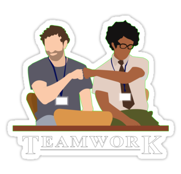

Team Lead
Тимлид — это IT-специалист, который управляет своей командой разработчиков, владеет технической стороной, принимает участие в работе над архитектурой проекта, занимается ревью кода, а также разработкой некоторых особо сложных заданий на проекте.
Фактически, team lead — это руководитель команды: команды разработчиков, QA, команды из разномастных специалистов. Его можно условно назвать капитаном, или лидером команды, что ясно из названия.
Team leader, зачастую, на высоком уровне владеет технической стороной, умеет сам заниматься разработкой, тестированием или дизайном. Он может принимать участие в разработке архитектуры проекта, лично заниматься написанием кода, тестированием и т.д.
Обязанность тимлида #1: забота о своей команде. Команда должна чувствовать себя комфортно в рабочих условиях и быть хорошо мотивированной. Кроме того, тимлид также обеспечивает профессиональный и карьерный рост своих ребят, регулярно проводит беседы на тему, куда людям интересно развиваться, и помогает им в этом
Обязанности:
- Планирование. Важной частью работы любой IT-команды является планирование: оценка времени, необходимого для выполнения задачи, а также планирование времени и приоритетов решения задач и подзадач. В процессе планирования разрабатывается план проекта, его схема-архитектура, распределяются задачи между участниками команды.
- Контроль над выполнением проекта. В обязанности Team Lead’a входит обеспечение выполнения проектов в оцененный ранее срок и контроль его соответствия техническим требованиям. С этой целью тимлиды проводят совещания внутри проектной команды, перераспределяют задания, а также занимаются планированием уже в процессе работы над проектом.
Team lead является и начальником и, образно выражаясь, старшим братом для членов своей команды. Он непосредственно руководит их работой, распределяет задачи, управляет взаимодействием между вверенными ему разработчиками. Кроме этого, тимлид отвечает и за микроклимат внутри своего коллектива, за работоспособность каждого отдельно взятого участника команды — ведь от этих вещей напрямую зависит эффективность их совместной работы. Тимлид может быть для своих подчиненных психологом, другом и помощником. Он занимается мотивацией сотрудников, обеспечивает им комфортные условия труда. А также, зачастую, отвечает за их развитие и профессиональный рост.
Если человек — не интроверт, имеет лидерские качества и умеет быстро принимать решения, хорошо знает английский, может и хочет общаться с клиентами, имеет хорошие технические скиллы, интересуется архитектурой, занимается самообучением и саморазвитием, рано или поздно он получает предложение стать ведущим специалистом на проекте, а затем и тимлидом
Достоинства должности в основном связывают с приобретением административных навыков. На позиции тимлида специалист учится эффективно общаться с людьми, управлять конфликтами, строить здоровую атмосферу внутри команды. Бывших сеньоров привлекают возможности нести большую ответственность, решать более сложные и разнообразные задачи, участвовать в развитии бизнеса, влиять на коммерческие результаты компании, обучать других, получать более высокий уровень дохода.
Недостатки — обратная сторона достоинств. Тимлиду приходится отвечать как за себя, так и за других, за конечный результат.
Нужно быть готовым к большей нагрузке, дополнительным затратам нервных клеток, разорванному рабочему дню и необходимостью постоянно переключаться между задачами.